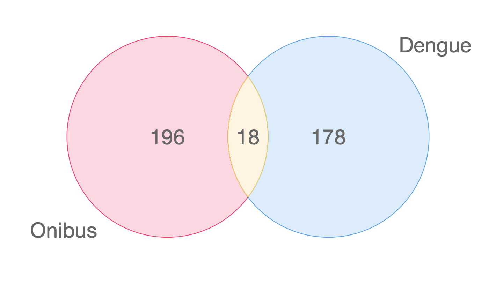

<body>
<table style=" background-color: beige; border: solid 1px black;">
    <colgroup span="3" class="columns"></colgroup>
    <h2>
        Relatório Mobilidade
        <h3> Q3)Informar nome, data de nascimento e linhas de ônibus dos cidadãos de XPTO que utilizaram o transporte público e não tiveram dengue.  O - D<h3>
    </h2>
    <tr>
        <th>Nome</th>
        <th>Nascimento</th>
        <th>Linhas de Onibus</th>
    </tr>
    <tr>
        <td width="30%" style="border: solid 1px black;"id="nome">
        </td>
        <td style="border: solid 1px black;" id="nascimento">
        </td>
        <td style="border: solid 1px black;" id="onibus">
        </td>
    </tr>
    <tr> 

    </tr>
    <script defer>
            async function q3function(){
                const url = '/src/data/allsetsfixed.json';
                const response = await fetch(url);
                const datapoints = await response.json();
                const nomesAlunos = datapoints.alunos.map((pessoaAluno) => pessoaAluno.nome);
                const nomesDengue = datapoints.dengue.map((pessoaDengue) => pessoaDengue.nome)
                const nomesOnibus = datapoints.onibus.map((pessoaOnibus) => pessoaOnibus.nome);
                let placeholder = document.getElementById("nome");
                let placeholder2 = document.getElementById("nascimento");
                let placeholder3 = document.getElementById("onibus");
                //O in A
                var result2 = nomesOnibus.filter(function (e) {
                    return this.indexOf(e) > -1;
                }, nomesAlunos);
                //O + (O in A)
                var newArr = result2.concat(nomesOnibus);
                //O - D
                var newArr2 = nomesAlunos.filter(x => !nomesOnibus.includes(x));
                //triple intersection
                var object = { filterA: nomesAlunos, filterB: nomesDengue, filterN: nomesOnibus },
                    result = Object
                        .values(object)
                        .reduce((a, b) => b.filter(Set.prototype.has, new Set(a)));
                //O-D - triple intersection
                var newArr3 = nomesOnibus.filter(x => !nomesDengue.includes(x));
                let count = 0;
                //(O in A) - triple intersection + D
                var newArr4 = result.concat(newArr2);
                for(let i = 0; i < nomesOnibus.length; i++){
                    for (let j = 0; j < newArr3.length; j++){
                        if (newArr3[j] == nomesOnibus[i]){
                            placeholder3.innerHTML += `<br><tr>${datapoints.onibus[i].onibus}</tr>`;
                            placeholder2.innerHTML += `<br><tr>${datapoints.onibus[i].nascimento}<tr>`;
                            placeholder.innerHTML += `<br><tr>${datapoints.onibus[i].nome}</tr>`;
                            count++;
                            
                        }
                    }
                };
                console.log(count);
            };
            
        q3function();

    </script>
    
    <h1>Resposta:</h1><p style="font-size: 1.5rem;">Área em <b>vermelho.</b></p>
</body>


